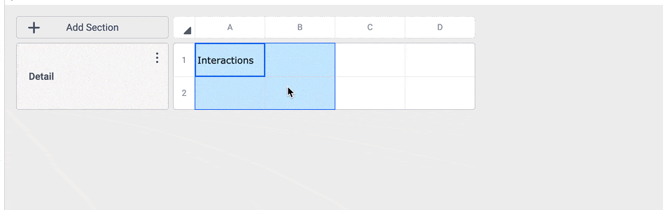

User Interface Design
Modern and Professional Look and Feel
The Aesthetic Usability Effect states that users often perceive more aesthetically pleasing design as more usable.

The outdated report builder interface.

I improved the look and feel as well as created signifiers for previously hidden, important actions.
Fast and Familiar Interaction Design

We updated the interactions to match Microsoft Excel and Google Sheets, optimal for working fast.
Jakob's Law states that users spend most of their time on other sites. This means that users prefer your site to work the same way as all the other sites they already know.

Additionally, I designed a visual indicator communicating that users can move cells from one area to another and add any missing columns or rows.
Clean and Responsive Report Viewing
The highest-trafficked page needs to be simple, easy to use, and flexible for all users.